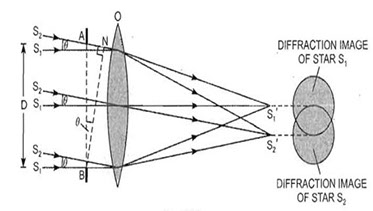

Resolving power
To see two objects distinctly, we should have θobjects >> θmin
θobjects is angle between objects and aperture: tanθ objects ~~d/y
θmin is minimum angular separation that aperture can resolve:
sinθmin ~~ θmin = 1.22 λ/D
We can improve resolution by increasing θobjects or decreasing θmin
Two objects are just resolved when the maximum of one is at the minimum of the other.
Also we can say at limiting condition θobject = θmin
Resolving power of telescope:
It is defined as reciprocal of smallest angular separation between two distant objects, which can be seen distinctly with help of telescope.
-crop-u78052.jpg)
Resolving power of microscope:
It is defined as reciprocal of least separation between two close objects which can be seen distinctly.

-crop-u78072.jpg)